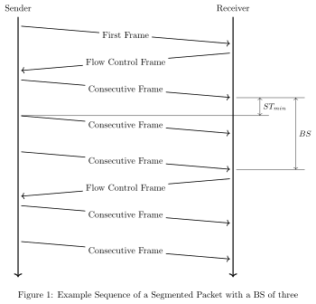

ISO-TP Transport Protocol¶
Overview¶
ISO-TP is a transport protocol defined in the ISO-Standard ISO15765-2 Road vehicles - Diagnostic communication over Controller Area Network (DoCAN). Part2: Transport protocol and network layer services. As its name already implies, it is originally designed, and still used in road vehicle diagnostic over Controller Area Networks. Nevertheless, it’s not limited to applications in road vehicles or the automotive domain.
This transport protocol extends the limited payload data size for classical CAN (8 bytes) and CAN-FD (64 bytes) to theoretically four gigabytes. Additionally, it adds a flow control mechanism to influence the sender’s behavior. ISO-TP segments packets into small fragments depending on the payload size of the CAN frame. The header of those segments is called Protocol Control Information (PCI).
Packets smaller or equal to seven bytes on Classical CAN are called single-frames (SF). They don’t need to fragment and do not have any flow-control.
Packets larger than that are segmented into a first-frame (FF) and as many consecutive-frames as required. The FF contains information about the length of the entire payload data and additionally, the first few bytes of payload data. The receiving peer sends back a flow-control-frame (FC) to either deny, postpone, or accept the following consecutive frames. The FC also defines the conditions of sending, namely the block-size (BS) and the minimum separation time between frames (STmin). The block size defines how many CF the sender is allowed to send, before he has to wait for another FC.
{kind=link}
API Reference¶
- group can_isotp
CAN ISO-TP Interf.
Defines
-
ISOTP_N_OK¶
Completed successfully
-
ISOTP_N_TIMEOUT_A¶
Ar/As has timed out
-
ISOTP_N_TIMEOUT_BS¶
Reception of next FC has timed out
-
ISOTP_N_TIMEOUT_CR¶
Cr has timed out
-
ISOTP_N_WRONG_SN¶
Unexpected sequence number
-
ISOTP_N_INVALID_FS¶
Invalid flow status received
-
ISOTP_N_UNEXP_PDU¶
Unexpected PDU received
-
ISOTP_N_WFT_OVRN¶
Maximum number of WAIT flowStatus PDUs exceeded
-
ISOTP_N_BUFFER_OVERFLW¶
FlowStatus OVFLW PDU was received
-
ISOTP_N_ERROR¶
General error
-
ISOTP_NO_FREE_FILTER¶
Implementation specific errors Can’t bind or send because the CAN device has no filter left
-
ISOTP_NO_NET_BUF_LEFT¶
No net buffer left to allocate
-
ISOTP_NO_BUF_DATA_LEFT¶
Not sufficient space in the buffer left for the data
-
ISOTP_NO_CTX_LEFT¶
No context buffer left to allocate
-
ISOTP_RECV_TIMEOUT¶
Timeout for recv
-
ISOTP_FIXED_ADDR_SA_POS¶
Position of fixed source address (SA)
-
ISOTP_FIXED_ADDR_SA_MASK¶
Mask to obtain fixed source address (SA)
-
ISOTP_FIXED_ADDR_TA_POS¶
Position of fixed target address (TA)
-
ISOTP_FIXED_ADDR_TA_MASK¶
Mask to obtain fixed target address (TA)
-
ISOTP_FIXED_ADDR_PRIO_POS¶
Position of priority in fixed addressing mode
-
ISOTP_FIXED_ADDR_PRIO_MASK¶
Mask for priority in fixed addressing mode
-
ISOTP_FIXED_ADDR_RX_MASK¶
Typedefs
-
typedef void (*isotp_tx_callback_t)(int error_nr, void *arg)¶
Functions
-
int isotp_bind(struct isotp_recv_ctx *ctx, const struct device *can_dev, const struct isotp_msg_id *rx_addr, const struct isotp_msg_id *tx_addr, const struct isotp_fc_opts *opts, k_timeout_t timeout)¶
Bind an address to a receiving context.
This function binds an RX and TX address combination to an RX context. When data arrives from the specified address, it is buffered and can be read by calling isotp_recv. When calling this routine, a filter is applied in the CAN device, and the context is initialized. The context must be valid until calling unbind.
- Parameters
ctx – Context to store the internal states.
can_dev – The CAN device to be used for sending and receiving.
rx_addr – Identifier for incoming data.
tx_addr – Identifier for FC frames.
opts – Flow control options.
timeout – Timeout for FF SF buffer allocation.
- Return values
ISOTP_N_OK – on success
ISOTP_NO_FREE_FILTER – if CAN device has no filters left.
-
void isotp_unbind(struct isotp_recv_ctx *ctx)¶
Unbind a context from the interface.
This function removes the binding from isotp_bind. The filter is detached from the CAN device, and if a transmission is ongoing, buffers are freed. The context can be discarded safely after calling this function.
- Parameters
ctx – Context that should be unbound.
-
int isotp_recv(struct isotp_recv_ctx *ctx, uint8_t *data, size_t len, k_timeout_t timeout)¶
Read out received data from fifo.
This function reads the data from the receive FIFO of the context. It blocks if the FIFO is empty. If an error occurs, the function returns a negative number and leaves the data buffer unchanged.
- Parameters
ctx – Context that is already bound.
data – Pointer to a buffer where the data is copied to.
len – Size of the buffer.
timeout – Timeout for incoming data.
- Return values
Number – of bytes copied on success
ISOTP_WAIT_TIMEOUT – when “timeout” timed out
ISOTP_N_* – on error
-
int isotp_recv_net(struct isotp_recv_ctx *ctx, struct net_buf **buffer, k_timeout_t timeout)¶
Get the net buffer on data reception.
This function reads incoming data into net-buffers. It blocks until the entire packet is received, BS is reached, or an error occurred. If BS was zero, the data is in a single net_buf. Otherwise, the data is fragmented in chunks of BS size. The net-buffers are referenced and must be freed with net_buf_unref after the data is processed.
- Parameters
ctx – Context that is already bound.
buffer – Pointer where the net_buf pointer is written to.
timeout – Timeout for incoming data.
- Return values
Remaining – data length for this transfer if BS > 0, 0 for BS = 0
ISOTP_WAIT_TIMEOUT – when “timeout” timed out
ISOTP_N_* – on error
-
int isotp_send(struct isotp_send_ctx *ctx, const struct device *can_dev, const uint8_t *data, size_t len, const struct isotp_msg_id *tx_addr, const struct isotp_msg_id *rx_addr, isotp_tx_callback_t complete_cb, void *cb_arg)¶
Send data.
This function is used to send data to a peer that listens to the tx_addr. An internal work-queue is used to transfer the segmented data. Data and context must be valid until the transmission has finished. If a complete_cb is given, this function is non-blocking, and the callback is called on completion with the return value as a parameter.
- Parameters
ctx – Context to store the internal states.
can_dev – The CAN device to be used for sending and receiving.
data – Data to be sent.
len – Length of the data to be sent.
rx_addr – Identifier for FC frames.
tx_addr – Identifier for outgoing frames the receiver listens on.
complete_cb – Function called on completion or NULL.
cb_arg – Argument passed to the complete callback.
- Return values
ISOTP_N_OK – on success
ISOTP_N_* – on error
-
struct isotp_msg_id¶
- #include <isotp.h>
ISO-TP message id struct.
Used to pass addresses to the bind and send functions.
Public Members
-
union isotp_msg_id.[anonymous] [anonymous]¶
CAN identifier
If ISO-TP fixed addressing is used, isotp_bind ignores SA and priority sections and modifies TA section in flow control frames.
-
uint8_t ext_addr¶
ISO-TP extended address (if used)
-
uint8_t id_type¶
Indicates the CAN identifier type (standard or extended)
-
uint8_t use_ext_addr¶
Indicates if ISO-TP extended addressing is used
-
uint8_t use_fixed_addr¶
Indicates if ISO-TP fixed addressing (acc. to SAE J1939) is used
-
union isotp_msg_id.[anonymous] [anonymous]¶
-
struct isotp_fc_opts¶
- #include <isotp.h>
ISO-TP frame control options struct.
Used to pass the options to the bind and send functions.
-
ISOTP_N_OK¶